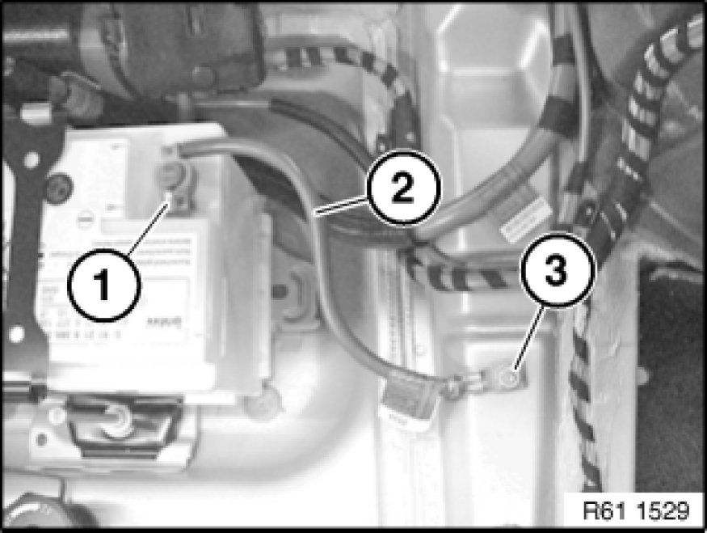

Negative: Service and Repair
61 12 013 - Replacing negative battery cable

Warning!
Observe safety instructions for handling vehicle battery.

Necessary preliminary tasks:
- Remove roller cover from luggage compartment.
- Release cover on seat belt at top rear Removing and Installing/Replacing Rear Left or Right Seat Belts
- Remove both rest side sections Removing and Installing/Replacing Left/Right Sides of Backrest on Rear Seat Backrest (Through-Loading System) on rear seat backrest
- Remove backrest for rear seat Removing and Installing/Replacing Left or Right Rear Seat Backrest (Through-Loading System)
- Remove rear luggage compartment floor trim 51 47 101 Removing and Installing/Replacing Luggage Compartment Floor Trim Panel
- Remove front trim for luggage compartment floor Replacing Front Trim for Luggage Compartment Floor
- Remove trim for rear right roof pillar (C-pillar) Removing and Installing/Replacing Trim Panel for Rear Left or Right Roof Pillar
- Remove flap in luggage compartment panel Removing and Installing/Replacing Flap In Luggage Compartment Trim, Left or Right
- Remove both trims for rear roof pillar (D-pillar) Pillar Trim
- Remove trim on tail panel at top 51 46 050 Removing and Installing/Replacing Top Trim on Rear Apron
- Remove inner window cavity cover strip Service and Repair on right
- Remove storage compartment in luggage compartment on right Removing And Installing/Replacing Storage Compartment In Luggage Compartment on Right
- Remove right luggage compartment wheel arch trim .
- Remove lashing rail in luggage compartment floor Removing and Installing/Replacing Left or Right Lashing Rail In Luggage Compartment Floor on right
- Remove right luggage compartment recess panel

Release nut (1) on battery negative terminal.
Tightening torque 61 21 1AZ [1][2]Mechanical Specifications.
Detach battery negative cable (2) upwards.
Release nut (3) and battery negative cable (2).
Tightening torque 61 21 2AZ [1][2]Mechanical Specifications.